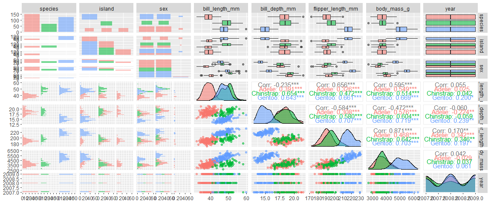

Illustration de @allison_horst
Introduction
Quand on a besoin d’un petit jeu de donnees de demonstration, on utilise souvent les iris de Fisher. Il m’arrive de leur preferer les donnees tips du package reshape2 qui contiennent plus de variables qualitatives, et le package palmerpenguins est un bon nouveau candidat que je vous presente ci-dessous.
Les iris
Les iris de Fisher, c’est un petit jeu de donnees natif de R. Mais il est vite lassant :
- on a exactement le meme nombre de specimens de chaque espece (50)
- il n’y a que des variables numeriques en plus de l’espece
- une quelconque des variables Petal.Length ou Petal.Width suffit a isoler exactement une des especes (setosa) des autres
On voit tous ces problemes dans le graphique suivant.
# pour installer le package palmerpenguins
# remotes::install_github("allisonhorst/palmerpenguins")
library("dplyr")
library("GGally")
ggpairs(iris %>% relocate(Species), mapping = aes(color = Species, alpha = 0.8))
Les manchots
On a un peu plus de challenge avec les manchots Adelie, Papou (Gentoo) et a jugulaire (Chinstrap) :
- des nombres differents de manchots dans chaque espece
- des variables qualitatives comme l’ile ou le genre
- il faut combiner flipper_length_mm et bill_depth_mm pour separer l’espece Gentoo des autres
- on a meme 11 lignes avec des valeurs manquantes
manchots = palmerpenguins::penguins %>% relocate(species, island, sex)
ggpairs(manchots, mapping = aes(color = species, alpha = 0.8))
Un lien si vous voulez creuser l’origine de ces donnees : https://github.com/allisonhorst/palmerpenguins
Et un apercu du travail d’Allison Horst pour Rstudio : https://blog.rstudio.com/2019/11/18/artist-in-residence/